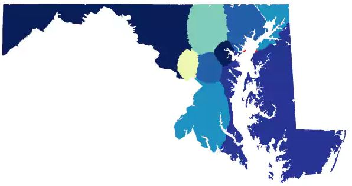

Brian Olson's algorithm redesigns boundaries to create 'optimally compact' district boundaries. His solution relies on census blocks and lowest average distance to the geographic center of each district to ensure compactness in district shapes.

District borders are not smooth due to geographic limitations of compactness